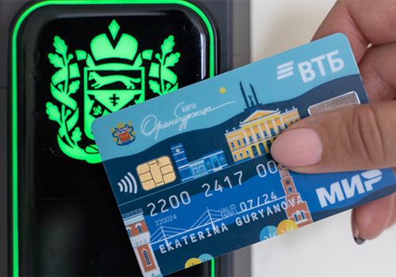

Привет!
Меня зовут Ксения.
Пишу статьи, посты, рассылки и другие тексты.
Буду полезна, если вы хотите о чем-то рассказать, но не знаете, как.
Меня зовут Ксения.
Пишу статьи, посты, рассылки и другие тексты.
Буду полезна, если вы хотите о чем-то рассказать, но не знаете, как.
Задам много вопросов и помогу определиться с целью. «Нужен канал в Дзене? Для чего? А как сейчас? А что, если …?»
Потом предложу способы решения задачи.
Узнаю, что волнует целевую аудиторию, и придумаю, как помочь с этой болью.
Если вам нужно продать школьную форму, узнаю, как родители ее выбирают, и предложу разные подачи: для тех, кто смотрит на состав и крой; тех, кто делает заказ 30 августа; тех, кому важно, чтобы ребенок блистал.
Пообщаюсь с экспертами, изучу литературу и продукт, чтобы писать с опорой на факты.
Перед тем, как писать о курсе по инвестициям, я прохожу его. Перед статьей про кредит наличными — говорю с опытными знакомыми и сама подаю заявку.
Не сдам полотно текста и не буду писать о том, что проще показать. Вместо этого сделаю коллажи, зарисовки, схемы.
Умею фотографировать. Если пришлете продукт, сделаю фотографии и использую их в статье.
«Московская биржа» запустила курс для начинающих инвесторов.
Задача: пригласить людей на курс.
Решение: две статьи — каждая для своей части аудитории:
Задача: помочь читателям оформить кредит со сниженной ставкой. Статьи предназначались для публикации на стороннем канале не от имени банка.
Решение:
Задача: помочь родителям выбрать и заказать школьную форму от Marks&Spencer.
Решение:
Работаю младшим редактором в Минцифре Оренбургской области. Пишу статьи и релизы для сайта министерства, фотографирую и веду канал «Минцифра56» в «Телеграме».
Следующие проекты — результат совместной работы команды контент-отдела. Мой вклад — текст, некоторые фотографии, иллюстрации.
В Оренбургской области используется сервис «Активный гражданин». Он помогает гражданам сообщать о проблемах в регионе без бюрократических заморочек.
Задача: рассказать, как сервис повлиял на общение граждан с властью.
Решение: статья в «Дзен» с эффектами сервиса и описанием, как этого удалось достичь.
Задача: привлечь организации внедрять карту оренбуржца в пропускную систему.
Решение: кейс о том, как Минцифра внедряла карты-пропуски в своем офисе.
В некоторых деревнях Оренбургской области проблемы со связью — жители пишут об этом в Минцифру. Оренбуржье вошло в нацпроект — до конца года связь появится во многих деревнях.
Задача: сообщить всем, кто жаловался на связь, что за год проблема решится.
Решение: заботливое письмо с подробными планами и благодарностью за обращение.
Задача: помочь региональным компаниям освоить электронный документооборот.
Решение: кейс администрации Илекского района о переходе на СЭД.
Чтобы обсудить детали сотрудничества, напишите мне во «Вконтакте» или в «Телеграме».
Можете написать на почту k.v.petrochenkova@gmail.com. Я отвечу, но позже.